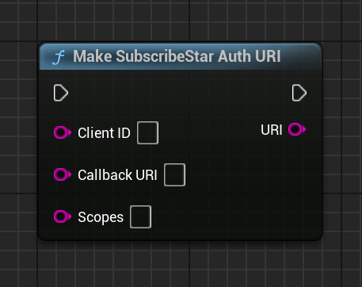

BP Function: Make SubscribeStar Auth URI
| C++ Impl | UNBSSAuthenticationAction |
|---|

Constructs a URI to the SubscribeStar login/consent page.
This is the page the user must visit in order to authenticate with SubscribeStar and generate a new access token.
Inputs
-
Client IDStringYou SubscribeStar app
Client ID -
Callback URIStringThe URI the user's browser should redirect to after authenticating with SubscribeStar. This must match the
Redirect URIset in your SubscribeStar integration settings. -
ScopesStringScopes to request access to. See: https://subscribestar.com/api#integration
Outputs
For any questions, help, suggestions or feature requests, please feel free to contact me at nbpsup@gmail.com